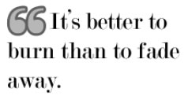

CSS
Algunos truquitos
A partir de ahora, los capítulos de CSS serán totalmente prácticos. Este primero mostrará diferentes “trucos” para conseguir ciertas cosas. Asegúrate de probarlos y de comprender todos ellos antes de continuar.
Links que cambian
Los enlaces tienen tres estados: sin visitar (“normales”), hover (cuando pasamos el cursor del ratón por encima), activos (cuando hacemos clic) y visitados (cuando ya hemos ido a esa dirección).
Estos estados se corresponden a pseudoelementos, y podemos cambiar la apariencia de los enlaces con CSS. Sin embargo, algunos navegadores tienen un bug que, dependiendo del orden en el que escribamos las reglas, se mostrará el resultado correctamente o no. ¿Cómo lo solucionamos? Pues LoVe/HAte. Es un mnemotécnico que nos ayudará a recordar el orden en el que estas reglas funcionan bien en cualquier navegador. Quedaría así:
/* links normales */
a: link {
text-decoration: none;
color: #00 a;
}
/* visitados */
a: visited {
color: #a00;
}
/* hover */
a: hover {
text-decoration: underline ;
}
/* activos */
a: active {
font-weight: bold;
}Lo que hace el código anterior es poner los enlaces de color azul marino y sin subrayado. Cuando pasamos el cursor por encima, aparece el subrayado. Al hacer clic, el texto del enlace se pone en negrita. Los enlaces que ya hemos visitado aparecen de color granate. Fácil, ¿no?
Links con el subrayado de diferente color
Al usar la propiedad text-decoration, el color de la línea de subrayado es el mismo que el del texto del enlace. Podemos hacer un pequeño chanchullo para cambiar esto, y es quitar el subrayado y poner en su lugar un borde:
a {
color: #fff;
text-decoration: none;
border-bottom: 1px solid #f0c;
}
a: hover {
border: none;
}Esto haría que los enlaces fueran de color blanco, y que la línea de subrayado fuese fucsia. Al pasar el cursor por encima, se eliminaría el subrayado. El pseudoelemento hover funciona para cualquier otro elemento de la web1. No dudes en usarlo en celdas de tablas o capas.
Campos de formulario chulos
Un efecto muy Web 2.0 es hacer los campos de formulario con fuente gigante y que el fondo del campo cambie cuando el usuario está usándolo. Esto se consigue con el pseudoelemento focus:
input, textarea {
font-size: large;
border: 3px solid #70 C332;
color: #666;
background: #fff;
}
input: focus, text-area: focus {
background: #eee;
}Lo anterior pondría los campos de formulario input y textarea con una fuente grande y gris oscura, borde gordito de color verde y el fondo blanco. Al hacer foco (es decir, cuando el visitante está situado en ese campo), el fondo cambia a un color gris clarito.
Blockquotes 2.0
Otro legado de la Web 2.0: blockquotes con texto gigante y unas comillas gigantes. Quizás es algo difícil de imaginar con esta descripción, pero si echas un vistazo a la figura, seguro que ya lo has visto en algún sitio antes.
Un ejemplo de código podría ser este:

blockquote {
background: url(comillas.gif) top left;
background-repeat : no-repeat ;
text-indent: 30px;
text-align: left;
font-size: x-large;
padding: 0px;
}Tendrás que ajustar los valores según la fuente y la imagen en sí. En muchos casos, es más conveniente utilizar padding y quitar el indentado.
Cambiar texto por imagen
Muchas veces, especialmente en headings, queremos cambiar el texto y en su lugar que aparezca una imagen bonita. Un ejemplo del código sería este (suponiendo que nuestra imagen mide 300x100 píxeles):
<! -- XHTML -->
<h3 id="enlaces"><span>Enlaces</span></h3>/* CSS */
h3# enlaces {
width: 300px;
height: 100px;
padding: 0px;
background: url(links.png) top left no-repeat;
}
h3 span {
visibility: hidden;
}La etiqueta span es nueva, y no significa nada (literalmente). Es una etiqueta “vacía”, y sólo la usamos para conseguir ciertos efectos CSS. Como semánticamente no tiene ningún valor, hemos de evitar su uso todo lo posible.
Lo que hace el código anterior es hacer coincidir las dimensiones de <h1> con las de la imagen. Después, gracias al <span> nos encargamos de que el texto del heading sea invisible. No obstante, aunque el texto sea invisible, todavía existe. Por eso, si el título es muy largo, es posible que sea más grande que la imagen que usamos de fondo, y es posible que nos descoloque el layout. En este caso, puedes cambiar la fuente de <h1> y hacerla enana.